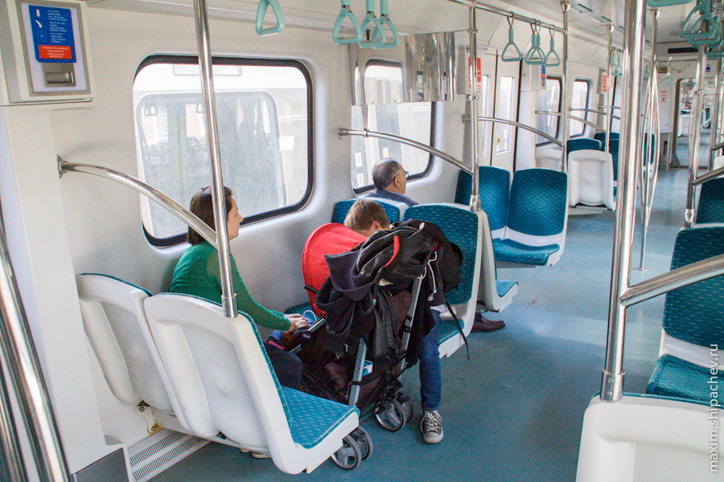
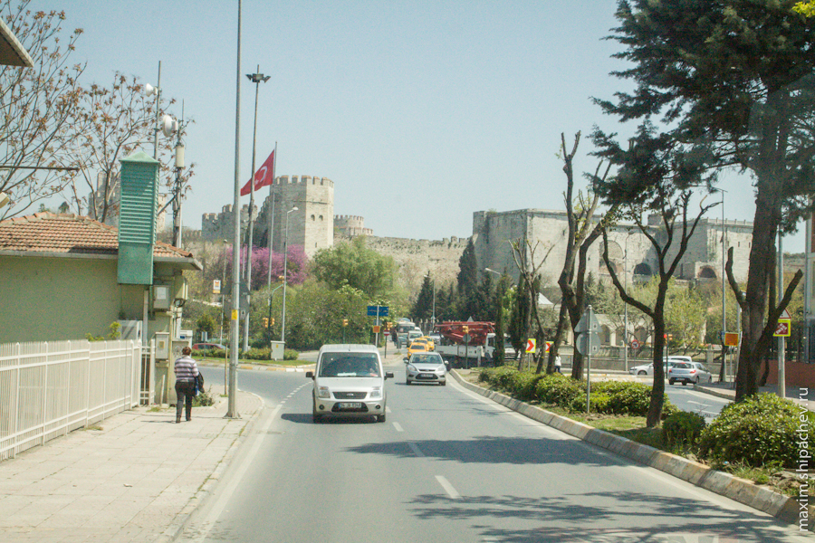
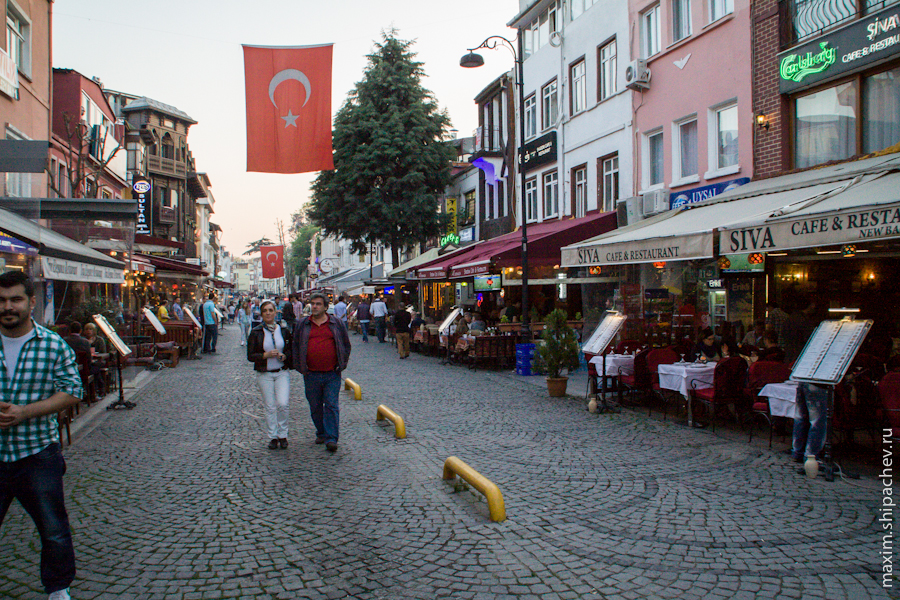

Шестой день в Стамбуле предполагал приключения уже с утра. Нам казалось, что мы в достаточной степени освоились в городе, чтобы не бронировать жильё через интернет, а остановиться там, где понравится по ходу.

Позвонил хозяину гостиницы, тот ответил, что подъезжать не будет и, как и в прошлый раз, попросил уходя просто захлопнуть дверь. Мы собрали вещи, оставили ключ на кровати, захлопнули дверь, спустились вниз… Железная дверь из подъезда на улицу была закрыта. На ключ, который остался на кровати в запертом номере. Перпектива нарисовывалась не самая увлекательная, но, к счастью, в номере на первом этаже тоже жила семья неустановленной национальности, они открыли нам дверь и выпустили на волю.
Мы потопали искать ночлег.
Поиски жилья ногами оказались более сложной задачей, чем думалось изначально. Несмотря на то, что большинство зданий в районе Султанахмет — гостиницы, на мой вопрос «May I stay here today?» в большинстве случаев отвечали «Sorry, we are fully». Снять номер стоимостью около 100 евро, в то же время, не было проблемой. Но мы целились на 2-3 тысячи за ночь, поэтому около 1,5 часов путешествовали от одной гостиницы к другой. В конце концов я оторвался от основной нашей группы туристов и в ускоренном темпе нашёл номер в гостинице неподалёку от Голубой Мечети и Собора Святой Софии. На ресепшне пахло какими-то ароматическими свечами, а заселявший нас парень играл в какую-то онлайн-игру. Номер стоил около 2,5 тысяч рублей, в нём были две односпальные кровати, туалет, душ, wi-fi. Так как поиски уже начали надоедать, мы решили остановиться здесь на сутки, тем более выбора не было — номер пустовал только одну ночь.

Это был наш самый маленький номер (но не самый плохой:) ).

Мы оставили в номере основные вещи и пошли осматривать окрестности.
В окрестностях оказался знаменитый Дворец Топкапы. Говорят, это один из известнейших мировых музеев, но мы не ставим целью зачекиниться во всех туристических местах, поэтому в музей не пошли.

Немаловажным фактором явилось ещё и то, что посещение музея стоит около 700 рублей с человека. Если вы посещаете все подобные культовые туристические места, то в Стамбуле рекомендую вам купить специальный MUSEUM PASS ISTANBUL — стоит около 1300 рублей, но за эту сумму в течение 2 суток вы сможете посетить десяток музеев.


Мы прогулялись в окрестностях дворца, прошлись по краю парка Гюльхане и… продолжили тур по гостиницам (завтра ведь тоже нужно было где-то ночевать). По дороге остановились позавтракать турецкой «пиццей» с чаем.

Потом продолжили поиски, в итоге я оплатил недорогой номер аж с четырьмя кроватями в гостинице «Истикляль».
Каких-то планов на день у нас не было, мы пошли на набережную и случайно пришли на железнодорожный вокзал.
В Стамбуле два основных железнодорожных вокзала. В азиатской части — Хайдарпаша, а в европейской Сиркеджи, куда мы собственно и зашли. Вокзал Сиркеджи был построен аж в конце 19 века и был местом, в общем-то легендарным. Именно с этого вокзала отправлялся знаменитый «Восточный экспреcc», в котором Эркюль Пуаро раскрыл очередное убийство, а в 50-60-е годы ресторан вокзала был излюбленным местом для стамбульского бомонда — журналистов, писателей.


На вокзале хорошо сохранилась аутентичная атмосфера старинного места, связывающего Европу и Азию. Рекомендую к посещению.
Я же, посмотрев на навигатор, прикинул, что с этого вокзала можно прокатиться на электричке. Покупаем специальные жетоны, проходим на перрон, тут же садимся в поезд, поезд отправляется.

В электричке ничего необычного. Привычная чистота, людей не очень много

Доезжаем до конечной станции Yedikule. Здесь уже похоже вполне типичный нетуристический Стамбул. Туристов мы встретили лишь однажды, несмотря на то, что приехали к так называемому Замку Семи башен.
Район вполне себе рабочий. Типичные прижелезнодорожные пейзажи, которые можно встретить в любом российском городе, если только их не отгородили зелёным забором.
Замок то ли был закрыт, то ли мы не нашли входа.


Запасы нашего продовольствия подходили к концу, поэтому едем до торгового центра «Оливия». До «Оливии» остановки две общественного транспорта, а тут, кстати, остановка местных маршрутных такси, долмушей. Стоимость проезда на долмуше зависит от расстояния, поэтому мы при входе сказали, что нам «ту оливиум» и заплатили названную водителем сумму.

Честно говоря, я не знал, как останавливаются эти самые долмуши, поэтому мы вышли чуть раньше.
В «Оливии» набиваем рюкзак детским питанием.

Обратно до вокзала возвращаемся снова на долмуше. Правда первый остановившийся водител отчего-то отказался нас брать, говорил что-то на турецком, артикулировал.
Мы вернулись к замку, у стен которого очередное кладбище.

Возвращаемся на вокзал. На вокзале установлены типичные турникеты. Вслед за нами двое молодых турков, вероятно местных жителей, перепрыгнули через турникет и огрызнулись контролёру. Через 20 секунд четверо полицейских уже объясняли молодым туркам, что так вести себя не принято. Не думаю, конечно, что те усвоили урок, но полиция сработала оперативно.
С полицией в Стамбуле вообще ситуация нормальная. Полиции много. Я не любитель разбираться в тонкостях политического противостояния, но в Стамбуле оно явно присутствует. Мы неоднократно были свидетелями митингов, а то и активных, даже местами агрессивных демонстраций. На входе в каждый торговый центр стоят рамки и охрана. Рядом с каждой площадью всегда дежурит отряд полиции, подготовленный именно к подавлению демонстраций. В первый день мы даже


Наблюдать за событиями, происходящими в Стамбуле сегодня, конечно дико (
Но до сегодняшних событий ещё больше месяца и мы возвращаемся на вокзал Сиркеджи. Железная дорога проходит по берегу Мраморного моря и порой открываются вполне живописные виды.

Выйдя из поезда идём в парке Гюльхане. Это один из старейших парков Стамбула, расположен у подножия дворца Топкапы. Знаменит в том числе своими цветниками — тюльпанами и розами. Правда розы ещё не зацвели, и нам остаётся любоваться отцветающими уже тюльпанами.


У гостиницы разговорился с торгующим рядом турком, который неплохо говорил по-русски. Из интересного — арбузы, которые сейчас (в конце апреля) продают сами турки не едят. Они — сера, то есть выращены в теплицах и с применением веществ. Через пару недель буду уже хорошие сказал…
Наша гостиница расположена в самом сердце ночной жизни исторического центра, но у нас двое детей и завтрашний переезд. Поэтому ложимся спать.
